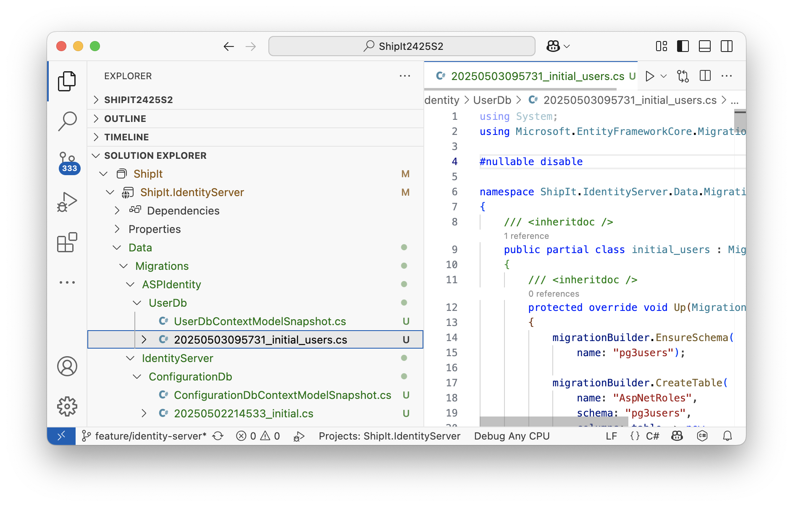
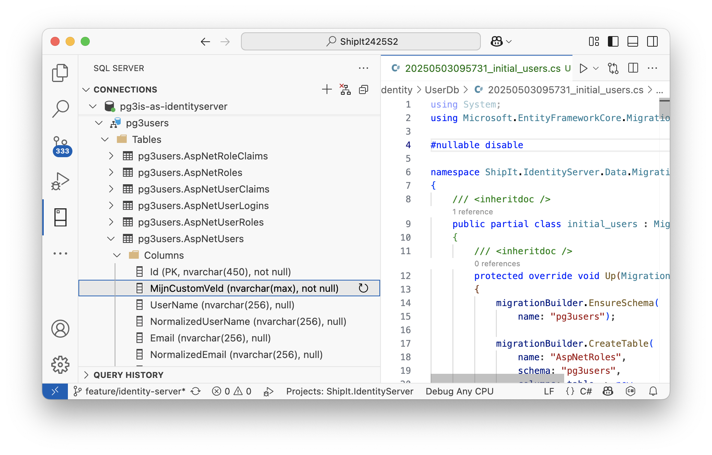
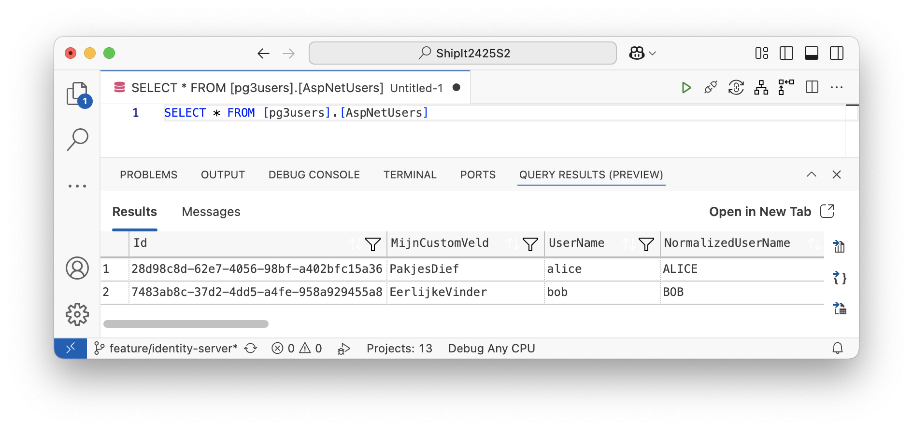
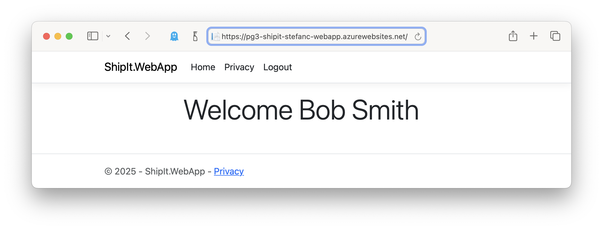

ASP Identity
| Dit cursusonderdeel is nog niet volledig uitgeschreven. De pagina bevat wel alle notities die je nodig hebt om de aanpassingen door te voeren. |
DB Schema
Maak apart SQL Server schema om Users in the bewaren.
CREATE SCHEMA pg3users
GO
GRANT ALTER ON SCHEMA :: pg3users TO IdentityServer
GO
GRANT INSERT, UPDATE, DELETE, SELECT, REFERENCES ON SCHEMA :: pg3users TO IdentityServer
GODotnet Project
Nuget
Voeg nugets toe ShipIt.IdentityServer.
-
Duende.IdentityServer.AspNetIdentity -
Microsoft.AspNetCore.Identity.EntityFrameworkCorev8.x
Users Folder
Maak een folder Users in IS project.
Maak daarin klasse ShipItUser en UserDbContext (naam vrij te kiezen).
namespace ShipIt.IdentityServer.Users;
public class ShipItUser : IdentityUser
{
public string MijnCustomVeld { get; set; }
}using Microsoft.AspNetCore.Identity.EntityFrameworkCore;
using Microsoft.EntityFrameworkCore;
namespace ShipIt.IdentityServer.Users;
public class UserDbContext : IdentityDbContext<ShipItUser> (1)
{
public UserDbContext(DbContextOptions<UserDbContext> options)
: base(options)
{
}
protected override void OnModelCreating(ModelBuilder modelBuilder)
{
base.OnModelCreating(modelBuilder);
modelBuilder.HasDefaultSchema("pg3users");
}
}| 1 | Inheritance brengt de nodige user management tabellen mee. |
Aanpassing ConfigureServices
public static WebApplication ConfigureServices(this WebApplicationBuilder builder)
{
builder.Services.AddRazorPages();
var connectionString = builder.Configuration.GetConnectionString("ShipItIdentityServerDb");
builder.Services.AddDbContext<UserDbContext>(options => (1)
options.UseSqlServer(
connectionString,
sql => sql.MigrationsAssembly(
typeof(Program).Assembly.GetName().Name)
.MigrationsHistoryTable(
"__MyMigrationsHistory",
"pg3users")));
builder.Services.AddIdentity<ShipItUser, IdentityRole>() (2)
.AddEntityFrameworkStores<UserDbContext>()
.AddDefaultTokenProviders();
builder.Services.AddIdentityServer(options =>
{
options.EmitStaticAudienceClaim = true;
})
.AddConfigurationStore(options =>
{
options.DefaultSchema = "pg3is";
options.ConfigureDbContext = b =>
b.UseSqlServer(
connectionString,
sql => sql.MigrationsAssembly(
typeof(Program).Assembly.GetName().Name)
.MigrationsHistoryTable(
"__MyMigrationsHistory",
"pg3is"));
})
.AddAspNetIdentity<ShipItUser>(); (3)
return builder.Build();
}| 1 | UserDbContext registreren |
| 2 | AspNetIdentity aan user db koppelen |
| 3 | AspNetIdentity users gebruiken in IS |
Migration
dotnet ef migrations add initial_users ` -c UserDbContext ` -o Data/Migrations/ASPIdentity/UserDb

dotnet ef database update -c UserDbContext

Test Run (Fail)
Je kan IS nu starten, maar het inloggen zal falen wanneer je klikt op "Click here to see the claims for your current session."
Callback/Login handling
De login/callback implementatie van de IS template waaruit we vertrokken zijn steunt op de in-memory test users. We hebben nu de implementatie nodig die steunt op de AspNetIdentity functionaliteit.
| De nodige aanpassingen zijn beperkt, maar hieronder werden (voorlopig) de klassen volledig geplaatst. |
// Copyright (c) Duende Software. All rights reserved.
// See LICENSE in the project root for license information.
[AllowAnonymous]
[SecurityHeaders]
public class Callback : PageModel
{
private readonly UserManager<ShipItUser> _userManager;
private readonly SignInManager<ShipItUser> _signInManager;
private readonly IIdentityServerInteractionService _interaction;
private readonly ILogger<Callback> _logger;
private readonly IEventService _events;
public Callback(
IIdentityServerInteractionService interaction,
IEventService events,
ILogger<Callback> logger,
UserManager<ShipItUser> userManager,
SignInManager<ShipItUser> signInManager)
{
_userManager = userManager;
_signInManager = signInManager;
_interaction = interaction;
_logger = logger;
_events = events;
}
public async Task<IActionResult> OnGet()
{
// read external identity from the temporary cookie
var result = await HttpContext.AuthenticateAsync(IdentityServerConstants.ExternalCookieAuthenticationScheme);
if (result.Succeeded != true)
{
throw new InvalidOperationException($"External authentication error: { result.Failure }");
}
var externalUser = result.Principal ??
throw new InvalidOperationException("External authentication produced a null Principal");
if (_logger.IsEnabled(LogLevel.Debug))
{
var externalClaims = externalUser.Claims.Select(c => $"{c.Type}: {c.Value}");
_logger.ExternalClaims(externalClaims);
}
// lookup our user and external provider info
// try to determine the unique id of the external user (issued by the provider)
// the most common claim type for that are the sub claim and the NameIdentifier
// depending on the external provider, some other claim type might be used
var userIdClaim = externalUser.FindFirst(JwtClaimTypes.Subject) ??
externalUser.FindFirst(ClaimTypes.NameIdentifier) ??
throw new InvalidOperationException("Unknown userid");
var provider = result.Properties.Items["scheme"] ?? throw new InvalidOperationException("Null scheme in authentiation properties");
var providerUserId = userIdClaim.Value;
// find external user
var user = await _userManager.FindByLoginAsync(provider, providerUserId);
if (user == null)
{
// this might be where you might initiate a custom workflow for user registration
// in this sample we don't show how that would be done, as our sample implementation
// simply auto-provisions new external user
user = await AutoProvisionUserAsync(provider, providerUserId, externalUser.Claims);
}
// this allows us to collect any additional claims or properties
// for the specific protocols used and store them in the local auth cookie.
// this is typically used to store data needed for signout from those protocols.
var additionalLocalClaims = new List<Claim>();
var localSignInProps = new AuthenticationProperties();
CaptureExternalLoginContext(result, additionalLocalClaims, localSignInProps);
// issue authentication cookie for user
await _signInManager.SignInWithClaimsAsync(user, localSignInProps, additionalLocalClaims);
// delete temporary cookie used during external authentication
await HttpContext.SignOutAsync(IdentityServerConstants.ExternalCookieAuthenticationScheme);
// retrieve return URL
var returnUrl = result.Properties.Items["returnUrl"] ?? "~/";
// check if external login is in the context of an OIDC request
var context = await _interaction.GetAuthorizationContextAsync(returnUrl);
await _events.RaiseAsync(new UserLoginSuccessEvent(provider, providerUserId, user.Id, user.UserName, true, context?.Client.ClientId));
Telemetry.Metrics.UserLogin(context?.Client.ClientId, provider!);
if (context != null)
{
if (context.IsNativeClient())
{
// The client is native, so this change in how to
// return the response is for better UX for the end user.
return this.LoadingPage(returnUrl);
}
}
return Redirect(returnUrl);
}
[System.Diagnostics.CodeAnalysis.SuppressMessage("Performance", "CA1851:Possible multiple enumerations of 'IEnumerable' collection", Justification = "<Pending>")]
private async Task<ShipItUser> AutoProvisionUserAsync(string provider, string providerUserId, IEnumerable<Claim> claims)
{
var sub = Guid.NewGuid().ToString();
var user = new ShipItUser
{
Id = sub,
UserName = sub, // don't need a username, since the user will be using an external provider to login
};
// email
var email = claims.FirstOrDefault(x => x.Type == JwtClaimTypes.Email)?.Value ??
claims.FirstOrDefault(x => x.Type == ClaimTypes.Email)?.Value;
if (email != null)
{
user.Email = email;
}
// create a list of claims that we want to transfer into our store
var filtered = new List<Claim>();
// user's display name
var name = claims.FirstOrDefault(x => x.Type == JwtClaimTypes.Name)?.Value ??
claims.FirstOrDefault(x => x.Type == ClaimTypes.Name)?.Value;
if (name != null)
{
filtered.Add(new Claim(JwtClaimTypes.Name, name));
}
else
{
var first = claims.FirstOrDefault(x => x.Type == JwtClaimTypes.GivenName)?.Value ??
claims.FirstOrDefault(x => x.Type == ClaimTypes.GivenName)?.Value;
var last = claims.FirstOrDefault(x => x.Type == JwtClaimTypes.FamilyName)?.Value ??
claims.FirstOrDefault(x => x.Type == ClaimTypes.Surname)?.Value;
if (first != null && last != null)
{
filtered.Add(new Claim(JwtClaimTypes.Name, first + " " + last));
}
else if (first != null)
{
filtered.Add(new Claim(JwtClaimTypes.Name, first));
}
else if (last != null)
{
filtered.Add(new Claim(JwtClaimTypes.Name, last));
}
}
var identityResult = await _userManager.CreateAsync(user);
if (!identityResult.Succeeded) throw new InvalidOperationException(identityResult.Errors.First().Description);
if (filtered.Count != 0)
{
identityResult = await _userManager.AddClaimsAsync(user, filtered);
if (!identityResult.Succeeded) throw new InvalidOperationException(identityResult.Errors.First().Description);
}
identityResult = await _userManager.AddLoginAsync(user, new UserLoginInfo(provider, providerUserId, provider));
if (!identityResult.Succeeded) throw new InvalidOperationException(identityResult.Errors.First().Description);
return user;
}
// if the external login is OIDC-based, there are certain things we need to preserve to make logout work
// this will be different for WS-Fed, SAML2p or other protocols
private static void CaptureExternalLoginContext(AuthenticateResult externalResult, List<Claim> localClaims, AuthenticationProperties localSignInProps)
{
ArgumentNullException.ThrowIfNull(externalResult.Principal, nameof(externalResult.Principal));
// capture the idp used to login, so the session knows where the user came from
localClaims.Add(new Claim(JwtClaimTypes.IdentityProvider, externalResult.Properties?.Items["scheme"] ?? "unknown identity provider"));
// if the external system sent a session id claim, copy it over
// so we can use it for single sign-out
var sid = externalResult.Principal.Claims.FirstOrDefault(x => x.Type == JwtClaimTypes.SessionId);
if (sid != null)
{
localClaims.Add(new Claim(JwtClaimTypes.SessionId, sid.Value));
}
// if the external provider issued an id_token, we'll keep it for signout
var idToken = externalResult.Properties?.GetTokenValue("id_token");
if (idToken != null)
{
localSignInProps.StoreTokens(new[] { new AuthenticationToken { Name = "id_token", Value = idToken } });
}
}
}// Copyright (c) Duende Software. All rights reserved.
// See LICENSE in the project root for license information.
[SecurityHeaders]
[AllowAnonymous]
public class Index : PageModel
{
private readonly UserManager<ShipItUser> _userManager;
private readonly SignInManager<ShipItUser> _signInManager;
private readonly IIdentityServerInteractionService _interaction;
private readonly IEventService _events;
private readonly IAuthenticationSchemeProvider _schemeProvider;
private readonly IIdentityProviderStore _identityProviderStore;
public ViewModel View { get; set; } = default!;
[BindProperty]
public InputModel Input { get; set; } = default!;
public Index(
IIdentityServerInteractionService interaction,
IAuthenticationSchemeProvider schemeProvider,
IIdentityProviderStore identityProviderStore,
IEventService events,
UserManager<ShipItUser> userManager,
SignInManager<ShipItUser> signInManager)
{
_userManager = userManager;
_signInManager = signInManager;
_interaction = interaction;
_schemeProvider = schemeProvider;
_identityProviderStore = identityProviderStore;
_events = events;
}
public async Task<IActionResult> OnGet(string? returnUrl)
{
await BuildModelAsync(returnUrl);
if (View.IsExternalLoginOnly)
{
// we only have one option for logging in and it's an external provider
return RedirectToPage("/ExternalLogin/Challenge", new { scheme = View.ExternalLoginScheme, returnUrl });
}
return Page();
}
public async Task<IActionResult> OnPost()
{
// check if we are in the context of an authorization request
var context = await _interaction.GetAuthorizationContextAsync(Input.ReturnUrl);
// the user clicked the "cancel" button
if (Input.Button != "login")
{
if (context != null)
{
// This "can't happen", because if the ReturnUrl was null, then the context would be null
ArgumentNullException.ThrowIfNull(Input.ReturnUrl, nameof(Input.ReturnUrl));
// if the user cancels, send a result back into IdentityServer as if they
// denied the consent (even if this client does not require consent).
// this will send back an access denied OIDC error response to the client.
await _interaction.DenyAuthorizationAsync(context, AuthorizationError.AccessDenied);
// we can trust model.ReturnUrl since GetAuthorizationContextAsync returned non-null
if (context.IsNativeClient())
{
// The client is native, so this change in how to
// return the response is for better UX for the end user.
return this.LoadingPage(Input.ReturnUrl);
}
return Redirect(Input.ReturnUrl ?? "~/");
}
else
{
// since we don't have a valid context, then we just go back to the home page
return Redirect("~/");
}
}
if (ModelState.IsValid)
{
var result = await _signInManager.PasswordSignInAsync(Input.Username!, Input.Password!, Input.RememberLogin, lockoutOnFailure: true);
if (result.Succeeded)
{
var user = await _userManager.FindByNameAsync(Input.Username!);
await _events.RaiseAsync(new UserLoginSuccessEvent(user!.UserName, user.Id, user.UserName, clientId: context?.Client.ClientId));
Telemetry.Metrics.UserLogin(context?.Client.ClientId, IdentityServerConstants.LocalIdentityProvider);
if (context != null)
{
// This "can't happen", because if the ReturnUrl was null, then the context would be null
ArgumentNullException.ThrowIfNull(Input.ReturnUrl, nameof(Input.ReturnUrl));
if (context.IsNativeClient())
{
// The client is native, so this change in how to
// return the response is for better UX for the end user.
return this.LoadingPage(Input.ReturnUrl);
}
// we can trust model.ReturnUrl since GetAuthorizationContextAsync returned non-null
return Redirect(Input.ReturnUrl ?? "~/");
}
// request for a local page
if (Url.IsLocalUrl(Input.ReturnUrl))
{
return Redirect(Input.ReturnUrl);
}
else if (string.IsNullOrEmpty(Input.ReturnUrl))
{
return Redirect("~/");
}
else
{
// user might have clicked on a malicious link - should be logged
throw new ArgumentException("invalid return URL");
}
}
const string error = "invalid credentials";
await _events.RaiseAsync(new UserLoginFailureEvent(Input.Username, error, clientId:context?.Client.ClientId));
Telemetry.Metrics.UserLoginFailure(context?.Client.ClientId, IdentityServerConstants.LocalIdentityProvider, error);
ModelState.AddModelError(string.Empty, LoginOptions.InvalidCredentialsErrorMessage);
}
// something went wrong, show form with error
await BuildModelAsync(Input.ReturnUrl);
return Page();
}
private async Task BuildModelAsync(string? returnUrl)
{
Input = new InputModel
{
ReturnUrl = returnUrl
};
var context = await _interaction.GetAuthorizationContextAsync(returnUrl);
if (context?.IdP != null && await _schemeProvider.GetSchemeAsync(context.IdP) != null)
{
var local = context.IdP == Duende.IdentityServer.IdentityServerConstants.LocalIdentityProvider;
// this is meant to short circuit the UI and only trigger the one external IdP
View = new ViewModel
{
EnableLocalLogin = local,
};
Input.Username = context.LoginHint;
if (!local)
{
View.ExternalProviders = new[] { new ViewModel.ExternalProvider ( authenticationScheme: context.IdP ) };
}
return;
}
var schemes = await _schemeProvider.GetAllSchemesAsync();
var providers = schemes
.Where(x => x.DisplayName != null)
.Select(x => new ViewModel.ExternalProvider
(
authenticationScheme: x.Name,
displayName: x.DisplayName ?? x.Name
)).ToList();
var dynamicSchemes = (await _identityProviderStore.GetAllSchemeNamesAsync())
.Where(x => x.Enabled)
.Select(x => new ViewModel.ExternalProvider
(
authenticationScheme: x.Scheme,
displayName: x.DisplayName ?? x.Scheme
));
providers.AddRange(dynamicSchemes);
var allowLocal = true;
var client = context?.Client;
if (client != null)
{
allowLocal = client.EnableLocalLogin;
if (client.IdentityProviderRestrictions != null && client.IdentityProviderRestrictions.Count != 0)
{
providers = providers.Where(provider => client.IdentityProviderRestrictions.Contains(provider.AuthenticationScheme)).ToList();
}
}
View = new ViewModel
{
AllowRememberLogin = LoginOptions.AllowRememberLogin,
EnableLocalLogin = allowLocal && LoginOptions.AllowLocalLogin,
ExternalProviders = providers.ToArray()
};
}
}Test Run (Ok)
Start IS en test dat je
-
via postman client token kan ophalen
-
via de UI uitgenodigd wordt om in te loggen wanneer je klikt op "Click here to see the claims for your current session."
-
Je hebt geen geldige user credentials. Dat is normaal op dit moment.
-
Users Toevoegen
using System.Security.Claims;
using Duende.IdentityModel;
using Microsoft.AspNetCore.Identity;
using Serilog;
namespace ShipIt.IdentityServer.Users;
public class SeedUserDb
{
public static void EnsureSeedData(WebApplication app)
{
using (var scope = app.Services.GetRequiredService<IServiceScopeFactory>().CreateScope())
{
var context = scope.ServiceProvider.GetRequiredService<UserDbContext>();
//context.Database.Migrate();
var userMgr = scope.ServiceProvider.GetRequiredService<UserManager<ShipItUser>>();
var alice = userMgr.FindByNameAsync("alice").Result;
if (alice == null)
{
alice = new ShipItUser
{
UserName = "alice",
Email = "AliceSmith@email.com",
EmailConfirmed = true,
MijnCustomVeld = "PakjesDief"
};
var result = userMgr.CreateAsync(alice, "Pass123$").Result;
if (!result.Succeeded)
{
throw new Exception(result.Errors.First().Description);
}
result = userMgr.AddClaimsAsync(alice, new Claim[]{
new Claim(JwtClaimTypes.Name, "Alice Smith"),
new Claim(JwtClaimTypes.GivenName, "Alice"),
new Claim(JwtClaimTypes.FamilyName, "Smith"),
new Claim(JwtClaimTypes.WebSite, "http://alice.com"),
}).Result;
if (!result.Succeeded)
{
throw new Exception(result.Errors.First().Description);
}
Log.Debug("alice created");
}
else
{
Log.Debug("alice already exists");
}
var bob = userMgr.FindByNameAsync("bob").Result;
if (bob == null)
{
bob = new ShipItUser
{
UserName = "bob",
Email = "BobSmith@email.com",
EmailConfirmed = true,
MijnCustomVeld = "EerlijkeVinder"
};
var result = userMgr.CreateAsync(bob, "Pass123$").Result;
if (!result.Succeeded)
{
throw new Exception(result.Errors.First().Description);
}
result = userMgr.AddClaimsAsync(bob, new Claim[]{
new Claim(JwtClaimTypes.Name, "Bob Smith"),
new Claim(JwtClaimTypes.GivenName, "Bob"),
new Claim(JwtClaimTypes.FamilyName, "Smith"),
new Claim(JwtClaimTypes.WebSite, "http://bob.com"),
new Claim("location", "somewhere")
}).Result;
if (!result.Succeeded)
{
throw new Exception(result.Errors.First().Description);
}
Log.Debug("bob created");
}
else
{
Log.Debug("bob already exists");
}
}
}
}Seed uivoeren at startup
public static WebApplication ConfigurePipeline(this WebApplication app)
{
app.UseSerilogRequestLogging();
if (app.Environment.IsDevelopment())
{
app.UseDeveloperExceptionPage();
}
InitializeDatabase(app);
SeedUserDb.EnsureSeedData(app); (1)| 1 | Users Seeden |
Start IS. Controleer DB.

Je kan deze credentials nu gebruiken.
Deploy
az webapp up \ --name pg3-shipit-stefanc-webapp \ --plan pg3-shipit-stefanc-plan \ --resource-group pg3-shipit-stefanc \ --location westeurope \ --os-type Linux
az webapp up \ --name pg3-shipit-stefanc-identity-api \ --plan pg3-shipit-stefanc-plan \ --resource-group pg3-shipit-stefanc \ --location westeurope \ --os-type Linux
Redirect urls voor webapp-client in shipit-identity (Azure SQL).
update [pg3isles].[ClientRedirectUris]
set [RedirectUri] = 'https://pg3-shipit-stefanc-webapp.azurewebsites.net/signin-oidc'
where [Id] = 1 -- !Gebruik de juiste Id!UPDATE [pg3isles].[ClientPostLogoutRedirectUris]
SET [PostLogoutRedirectUri] = 'https://pg3-shipit-stefanc-webapp.azurewebsites.net/signout-callback-oidc'
WHERE [Id] = 1 -- !Gebruik de juiste Id!
goDe ShipIt WebApp is bereikbaar op Azure en werkt samen met Identity Server. Alle Identity configuratie komt uit Azure SQL.
